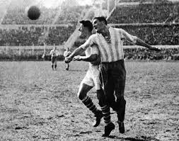

1.ª edición
Centenario de Uruguay
Copa Mundial de la FIFA Uruguay 1930
13 de julio – 30 de julio de 1930
País sede: Uruguay 🇺🇾
13 selecciones
18 partidos
Datos generales del torneo
- País sede: Uruguay 🇺🇾
- Ciudad sede: Montevideo
- Estadios: Estadio Centenario, Parque Central y Pocitos
- Selecciones participantes: 13
- Partidos jugados: 18
- Goles anotados: 70
- Campeón: Uruguay 🇺🇾
- Subcampeón: Argentina 🇦🇷
- Tercer lugar: Estados Unidos 🇺🇸
- Cuarto lugar: Yugoslavia 🇷🇸
- Máximo goleador: Guillermo Stábile (Argentina, 8 goles)
Momentos destacados
La primera Copa del Mundo tuvo un ambiente épico: viajes largos en barco, estadios repletos y el debut
histórico de un torneo que cambiaría para siempre la historia del fútbol.

Resumen del torneo
-
La FIFA eligió a Uruguay como sede para conmemorar el **centenario de su independencia** y por su éxito
olímpico en 1924 y 1928.
-
Varios países europeos rechazaron asistir debido a la distancia y el tiempo de viaje (entre 10 y 20 días en barco),
viajando finalmente solo cuatro selecciones de Europa: Francia, Bélgica, Rumania y Yugoslavia.
-
Las selecciones americanas llegaron en barcos como el famoso **Conte Verde**, que transportó a Brasil,
Argentina, Chile y otros equipos.
-
La final enfrentó a los eternos rivales rioplatenses: Uruguay y Argentina. Tras ir perdiendo 1–2,
Uruguay remontó y ganó 4–2, desatando celebraciones masivas en Montevideo.
-
Guillermo Stábile, quien debutó en el torneo, se convirtió en **máximo goleador** con 8 tantos pese a no jugar el primer partido.
Fase final
Semifinales
- 🇺🇾 Uruguay 6–1 Yugoslavia 🇷🇸
- 🇦🇷 Argentina 6–1 Estados Unidos 🇺🇸
Final
- 🇺🇾 Uruguay 4–2 Argentina 🇦🇷
Selecciones participantes por grupo
Grupo 1
- 🇦🇷 Argentina
- 🇨🇱 Chile
- 🇫🇷 Francia
- 🇲🇽 México
Grupo 2
- 🇾🇺 Yugoslavia
- 🇧🇷 Brasil
- 🇧🇴 Bolivia
Grupo 3
- 🇺🇾 Uruguay
- 🇵🇪 Perú
- 🇷🇴 Rumania
Grupo 4
- 🇺🇸 Estados Unidos
- 🇧🇪 Bélgica
- 🇵🇾 Paraguay
Final: Uruguay vs Argentina
La final se disputó el 30 de julio de 1930 ante más de 68 000 espectadores en el Estadio Centenario.
Uruguay remontó un 1–2 al descanso para ganar 4–2 y convertirse en el primer campeón del mundo.
Uruguay 🇺🇾 – Alineación titular
- DT: Alberto Suppici
- Enrique Ballestrero (POR)
- José Nasazzi (C)
- Ernesto Mascheroni
- Lorenzo Fernández
- Álvaro Gestido
- José Leandro Andrade
- Pablo Dorado
- Héctor Scarone
- Santos Iriarte
- Héctor Castro
- Pedro Cea
Argentina 🇦🇷 – Alineación titular
- DT: Francisco Olazar
- Juan Botasso (POR)
- José Della Torre
- Fernando Paternoster
- Juan Evaristo
- Luis Monti
- Manuel Ferreira (C)
- Carlos Peucelle
- Mario Evaristo
- Guillermo Stábile
- Bernabé Ferreyra
- Francisco Varallo
Reseña general
Uruguay 1930 marcó el nacimiento de la Copa Mundial de la FIFA. Un torneo que comenzó sin saber si sería
viable, pero que terminó convirtiéndose en un fenómeno global. Pese a las dificultades logísticas y los largos
viajes en barco, el torneo tuvo emoción, estadios llenos y un ambiente incomparable.
Uruguay, doble campeón olímpico, reafirmó su hegemonía futbolística, con figuras legendarias como
José Nasazzi y Héctor Scarone. Argentina, por su parte, mostró un ataque formidable
liderado por Guillermo Stábile.
La final entre Uruguay y Argentina sentó las bases de una de las rivalidades más grandes del fútbol mundial.
Aquel 30 de julio de 1930 nació oficialmente la historia del torneo más importante del planeta.